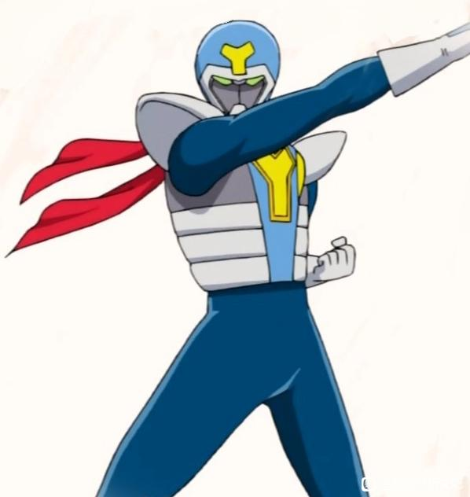

不知道吧友还记不记得柯南世界观里有一个超人气特摄英雄假面超人，虽然平常出现在剧情里很少，要不就是少侦组买假面超人的周边之类的。但是我查了一下，假面超人其实是有一个完整的设定还有剧情的，而且假面超人的这个形象明确是致敬1971的初代假面骑士，假面骑士1号。而假面骑士每一代都有的设定是“敌我同源”，所以我大胆猜测刚子在这里埋了黑羽乌丸同源论的伏笔。

首先给没看过特摄的吧友说一下，日本有很多特摄片，一些县市的电视台也会自己制作特摄，这些统称地方特摄。但是最主流最有名气的还是三大特摄圆谷的奥特曼系列(在中国最出名)，东映的假面骑士和超级战队，到了90年代柯南开始连载那会儿这三个可以说是日本国民特摄了。
所以其实刚子在一开始为柯南加入特摄英雄形象的参考对象可以是奥特曼，超级战队，假面骑士的任何一个，甚至还可以是金属英雄系列。但是为什么最终刚子选定了假面骑士？我个人猜测是因为假面骑士特有的一种“敌我同源论”。
所以其实刚子在一开始为柯南加入特摄英雄形象的参考对象可以是奥特曼，超级战队，假面骑士的任何一个，甚至还可以是金属英雄系列。但是为什么最终刚子选定了假面骑士？我个人猜测是因为假面骑士特有的一种“敌我同源论”。
2024-05-09 01:08 | 帥倾城♂:没想到同担里还有特摄粉，我也是特摄粉！2024-05-09 03:15 | 白慕九◎:回复 帥倾城♂ :我比较喜欢看骑士，虽然🦊烂尾没看完，利维斯也看不下去，平成和令和的骑士几乎看完了2024-05-09 11:44 | 贴吧用户_Q9D2C5e:回复 帥倾城♂ :就我平时逛贴吧的经历来说，特摄粉和柯哀粉重合度还挺高的2024-05-10 00:19 | 光影计划师:回复 白慕九◎ :遇见同行了，我本人也是柯哀党+特摄厨2024-05-10 08:32 | 帝夷光:同柯哀党+特摄厨 特别特别好


敌我同源在假面骑士是指骑士和反派的力量来自于同一个地方，几乎每一部的假面骑士都有这个设定(昭和骑士我没什么了解，平成和令和都有)。就拿假面骑士1号来说，本乡猛被反派组织修卡改造后获得了变身假面骑士的力量，这就是敌我同源。
所以我想刚子会不会是从这个假面超人就开始暗示作为主角的新一和boss有关系，想一想击败组织的银色子弹实际上和组织boss有血缘关系，这不比现在降智的组织线有意思啊？
所以我想刚子会不会是从这个假面超人就开始暗示作为主角的新一和boss有关系，想一想击败组织的银色子弹实际上和组织boss有血缘关系，这不比现在降智的组织线有意思啊？
有趣的视角
我还是觉得组织只是明面的boss，组织被击溃，正方得到A药秘密后必定原地厮杀，就和黄昏之馆一样，争夺的焦点就是哀。好在FBI有大表哥，公安有干哥哥，军情六处有大姨妈，争夺起来，哀的性命应该可以保证。
2024-05-08 08:17 | 量子态的喵哥:A药一旦公布必定是会被各国权贵抢夺的，甚至现阶段的柯哀，一旦被发现，大概率会像科幻电影里拿到神级装备的主角那样被政府抓去解剖研究2024-05-08 09:01 | 贴吧用户_09635NV:回复 量子态的喵哥 :所以73才会设计玛丽也吃a药，这样至少让军情六处和FBI都有人不会站组织一边(除非这些人心狠到连自己家人都敢卖了)2024-05-08 09:03 | 贴吧用户_09635NV:回复 量子态的喵哥 :反而最不稳定的因素还是詹姆斯和安室。2024-05-08 18:09 | 发疯的法师:回复 顽皮鬼才 :?詹姆斯什么时候自爆了2024-05-09 01:52 | 发疯的法师:回复 顽皮鬼才 :原文是为了渗透进入组织 刚好明美那边方便作为突入口利用交往后结识灰原后再利用灰原周边的人加入组织 a药的目标效果外部的人根本就不清楚甚至连琴酒都是当毒药用的 怎么可能是为了a药2024-05-09 03:37 | 发疯的法师:回复 顽皮鬼才 :……如果是为了技术有必要派遣战斗人员卧底？2024-05-09 12:10 | 发疯的法师:回复 顽皮鬼才 :差不多得了 重大突破是灰原那会的少说也是5年前 cia早就在十年前（本堂爹）就渗透进去了 不存在是为了a药 酒厂本身就是跨国犯罪组织 甚至多次作案 安排人员潜入卧底搜集证据很正常2024-05-27 20:45 | Chem_:回复 发疯的法师 :不算自爆，正常人高位的人想要长生不老的药才是事实吧，秀一反而因为是大表哥的原因才会在这种情况背叛FBI；透子则是因为没有太多感情，如果得知艾莲娜女儿的事可能才会反组织；玛丽同理亲人原因2024-05-28 01:44 | 发疯的法师:回复 Chem_ :可酒厂在弄a药的效果连自己人都不清楚 琴酒都当毒药使（贝尔摩德就是迷惑行为了 明知道a药导致了工藤和宫野变小 还给玛丽喂药） 怎么就得出都想要长生不老药了2024-05-28 02:47 | Chem_:回复 发疯的法师 :前提是“知道是长生不老药”然后后面的发展我觉得是很自然的，至于怎么得出，看73想不想画这段了

顺便在百度看了下假面超人的大致剧情设定，我真的好想吐槽一下，刚子就是把工藤新一变成了假面超人男主一边自己对抗反派，一边对青梅竹马隐瞒身份，还要时不时救一下青梅。特摄棚早八百年就不这么写了，现在哪家特摄女主不知道男主的真实身份啊，骑士最新作歌查德女主都是和男主并肩作战的二号骑士了。
2024-05-08 10:45 | 小样不一样的:也不想想青山开始画柯南的时候来打的平成老大哥空我都还没出呢，可不就是昭和那一套吗2024-05-08 18:10 | 发疯的法师:不是 柯南又不是平成作的 你还拿令和作当例子？2024-05-08 19:49 | 白慕九◎:回复 发疯的法师 :我说歌查德只是想吐槽刚不与时俱进，行，就算是昭和，大部分女主也不是那种天天被怪人绑架等男主去救的花瓶大多数都会协助假面骑士，就算不知道他们的身份也会，到1975年的假面骑士stronger甚至出现了女主第一话就变身女性战士一直和男主并肩战斗的剧情了2024-05-08 19:53 | 白慕九◎:回复 小样不一样的 :可是昭和的女主也不是那种天天被怪人绑架要男主救的定位，一号的女主也不知道本乡猛是1号，照样会协助他战斗，1975的作品stronger出现了第一位女性战士电波女，变身者是女主一直和男主并肩战斗，刚子一方面对特摄还是不够了解，另一方面就是30年前的他还是大男子主义太重了2024-05-08 20:01 | 发疯的法师:回复 白慕九◎ :嘛 要不怎么说毛利兰是望夫石的苦情人设 虽然设定实际才过了才半年就很难搞2024-05-08 20:51 | 白慕九◎:青山画的的柯南又不是骑士再说毛利兰从来就没进过主线已经变成情报泄露机了
回复 发疯的法师 :我是觉得刚子对兰的塑造真的很一言难尽，感觉她放到哪个类型的动漫当女主都不太对劲2024-05-08 21:01 | 发疯的法师:，我把骑士拿出来举例只是觉得骑士敌我同源这个设定和他们提出来的黑羽乌丸同源有点像罢了
回复 白慕九◎ :别尬黑 搁国产剧那是相当融洽2024-05-08 21:18 | 白慕九◎:回复 发疯的法师 :也是，国产剧很多女主比兰神更离谱
如果黑羽乌丸同宗，那琴酒就太小丑了，自己忠于boss又对boss的子孙后代下死手，到最后再来个认亲剧情，整个酒厂都要傻眼。大结局最后一句台词就成了“我们一起包饺砸！”
2024-05-08 06:06 | 白慕九◎:真有血缘关系最后也不一定会大团圆的，比如假面骑士利维斯，男主男二女二都是大boss基夫的亲孙子最后他们三兄妹亲手干掉基夫，酒厂注定是反派要被消灭的，血缘不影响灭了他们2024-05-08 12:40 | 洛熙晨m:琴酒发现自己一直在和皇太孙斗智斗勇2024-05-28 03:07 | 奥斯丁格理芬:。琴酒：其实我早就知道啦，为了掩护皇太孙把知道他身份的都sha了
日本金典下克上

cy
有意思
2024-05-08 07:24 | 秦汐烟🌌:这个假面超人出场频率不低，少侦的好多剧情引子都是假面超人，而且我记得以前有人分析过，每次漫画里描述假面超人的新剧情都藏着人物的隐喻和暗示

我直接猜乌丸是个女小学生，要不要玛利亚出现了妈妈，我觉得玛利亚是乌丸的可能性最大。
2024-05-09 00:34 | 贴吧用户_5726KyK:我觉得玛丽亚还是亲戚的可能性更大
楼上。。
gegege最终做了Joker，那么……
插眼
挺有可能，早期也有过柯南扮演假面超人的剧情，可以视为一种暗喻
最直接的东西是那个变小的乔治短篇。 至于这个源是什么源，天机不可泄露 

敌我同源和假面英雄都是很经典的戏剧母题了吧，前者甚至可以追溯到圣经时代...后者的话像佐罗啊蝙蝠侠啊也都超过半个世纪了
还有一个跟他们历史一样长的戏剧母题就是王子复仇记如果乌丸当年是下克上，分家篡夺主家上位的话，柯南没准还真能拿哈姆雷特剧本
还有一个跟他们历史一样长的戏剧母题就是王子复仇记
如果乌丸当年是下克上，分家篡夺主家上位的话，柯南没准还真能拿哈姆雷特剧本若是真的，踢我一下
柯南应该也neta了奥特曼人间体不能暴露身份这点
发现我身边的柯哀好多包括我都是特摄迷，这种推测要是成真就有意思了